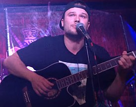

Макс Корж (повне ім'я Максим Анатолійович Корж ; рід. 23 листопада 1988 , Лунинець , Білоруська РСР , СРСР ) - білоруський співак і автор пісень. У ранньому віці батьки віддали Макса в музичну школу. У 16 років він з друзями створив свою музичну групу LunClan, яка недовго проіснувала. Після цього було ще кілька проектів, але всі вони не мали великого успіху. Макс записував пісні і білоруською мовою. Після всіх невдач Максим спробував себе в ролі бітмейкер, пишучи музику для інших виконавців. Ця ідея також не увінчалася успіхом, після чого Макс став співати сам під свої ж інструментали. Під час навчання в Білоруському державному університеті записав свою першу сольну пісню. Провчившись в БГУ до другого курсу, вирішив, що навчання заважає музиці, кинув університет і всерйоз зайнявся музичною діяльністю. Записав пісню «Небо допоможе нам» за 300 доларів, які позичив у своєї мами, і виклав її в соціальній мережі « ВКонтакте ». З-продюсерами пісні «Небо допоможе нам» виступив дует діджеїв Magic Sound. Після цього Максима забрали в армію, а коли він повернувся, то дізнався, що пісня стала популярною в інтернеті. За цей час пісня зібрала значну аудиторію, її навіть взяли для транслювання в ефірі деякі мінські радіостанції. Після цього він почав активно «розсилати» свої пісні діджеям, щоб вони крутилися в клубах
7 квітня 2012 року Макс Корж випустив перший музичний відео на пісню «Небо допоможе нам». Відеокліп швидко зайняв лідируюче місце в музичних чартах. Влітку 2012 року Макс Корж випустив перший альбом під назвою « Тваринний світ ». В альбом увійшло 16 пісень, слова яких написав сам співак. У цьому ж році він підписав контракт з лейблом Respect Production, де значаться такі відомі артисти, як « Каста », Чаян Фама , Жара. Це дозволило організовувати концерти не тільки в Білорусії, але і в Росії і на Україні. У 2013 році за версією сайту Rap.Ru платівка «Жити в кайф» зайняла 5-е місце в списку кращих російськомовних альбомів. Також в 2013 році Макс Корж посів друге місце в конкурсі музичного телеканалу A-One Hip-Hop Music Channel «Артист року» . У рейтингу Google Trends Україна «Людина року-2013» Макс Корж зайняв 9 місце. У 2014 році був організований масштабний концертний тур «Вирваний май». Під час нього Максу вдалося зібрати 6000 зрителей на футбольному манежі в Мінську 10 травня і повний палац спорту «Лужники» в Москві 24 травня. У червні 2014 року Макс Корж переміг в номінації «Альбом року» Премії Муз-ТВ 2014 з платівкою «Жити в кайф». У жовтні 2014 року Макс Корж випустив свій третій альбом, який отримав назву « Домашній ». Після цього співак вирушив у черговий тур з презентацією альбому. Під вивіскою «Великий Flat» пройшли концерти в країнах СНД і деяких європейських містах. У червні 2015 року Макс Корж був номінований на три номінації Премії Муз-ТВ 2015 : «Кращий хіп-хоп проект», «Кращий альбом» і «Кращий концертне шоу».